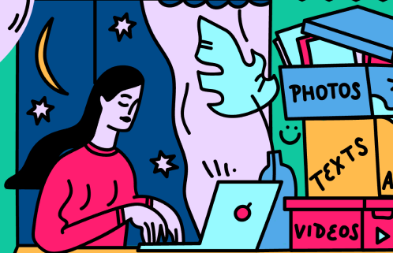

Команда Uquest
Uquest помогает начинающим разработчикам проверить знания и улучшить скиллы.
Специально для Вас мы создали игровые квесты по различным разделам юзабилити. Вы можете самостоятельно выбрать раздел, на который ориентирован квест. Здесь можно ознакомиться с полным списком имеющихся квестов.
Помощник ПОМОГайка
ПОМОГайка - умный робот. Он будет рад помочь, если у Вас возникнут трудности.

Робот будет давать подсказки при неободимости во время прохождении квеста, а также делиться полезной информацией по удобству использования веб-сайтов. Почитать статьи от ПОМОГайки можно в разделе Интересное.